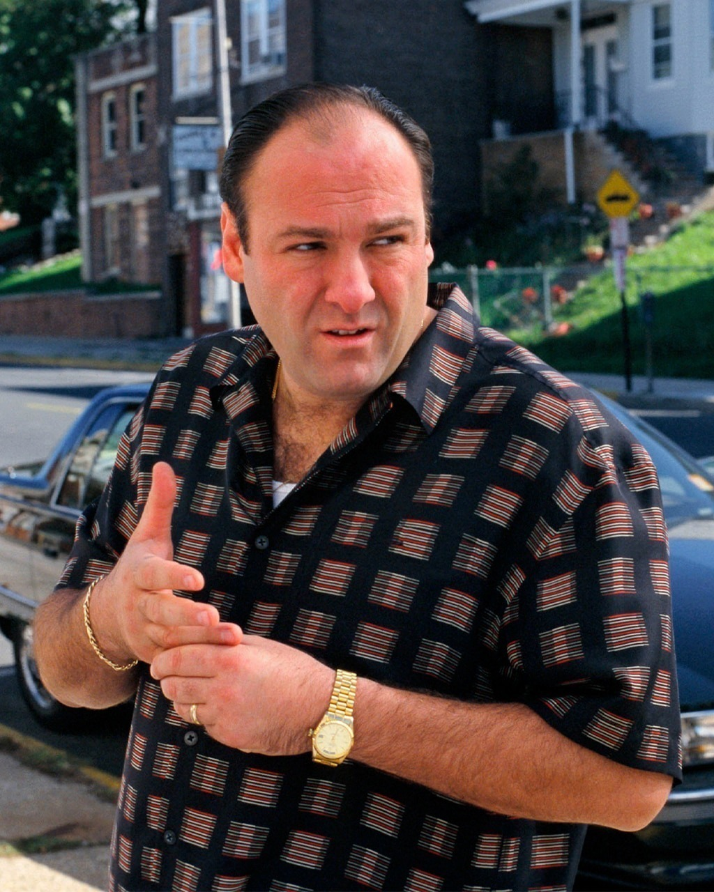

О персонаже
Энтони Сопрано — главный персонаж телесериала "Семья Сопрано", сыгранный Джеймсом Гандольфини. Он является главой мафиозной семьи Сопрано и борется с личными и профессиональными проблемами. В сериале является боссом криминальной «семьи» ДиМео.
Тони является персонажем, который сталкивается с множеством вызовов:
- Лидерство в мафиозной семье
- Проблемы с психическим здоровьем
- Отношения с семьей и друзьями
- Конфликты с конкурентами по опасному бизнесу